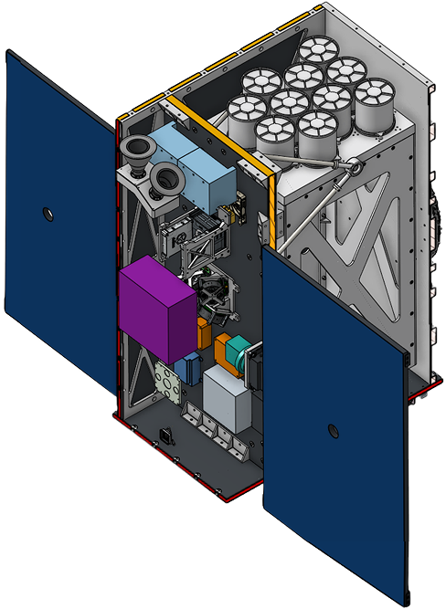
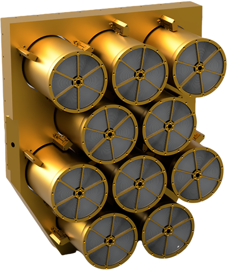
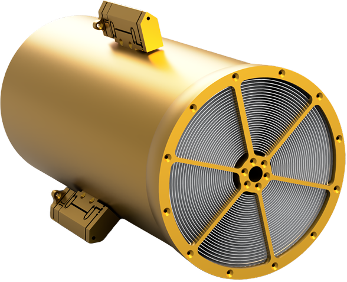
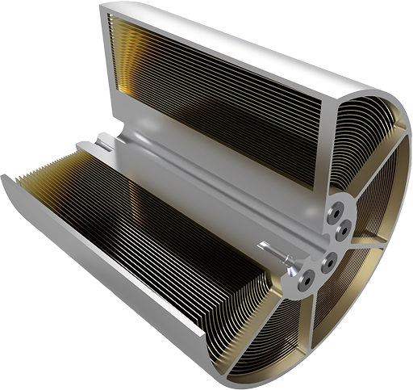

NEBULA Xplorer

NEBULA – Xplorer stands for “Netherlands Educational Satellite for Exploration of Binary-Linked Astrophysics – X-ray Observer”. About 400 students will join SRON, 14 Dutch educational institutions and many industrial partners in developing this space mission from start to finish, led by scientists and engineers. The mission has two goals. The scientific goal is to better understand how a black hole captures material from a companion star. The educational goal is for students from Dutch educational institutions to experience first hand how to build a space mission from the ground up. SRON is leading the NEBULA – Xplorer mission, contributing to a new generation of scientists, designers and technicians for Dutch space research.

About the instrument
Optical Bench
The optical bench holds and aligns the array of 10 concentrators in a precise and repeatable manner. For the layout of the concentrators a hexagonal grid is used. This allows for the 10 concentrators to be packed in a relatively small area.

Concentrator
Each concentrator has multiple spider structures holding the mirror shells in place. Due to the reflective behavoir of X-rays it is only possible to deflect them at very shallow angles.

Concentrator Open
The reflecting material is made of gold which is bound to an aluminum substrate, this design results in sufficient performance while maintaining a short focal length of only 0.8m.